Demos
Capturing DRAM Bus Traffic Using a Logic Analyzer
We use our DDR5 DRAM Bus interposer to observe memory transactions, showing reads and writes to plain and encrypted memory alike. On the left is our DDR5 interposer device, soldered by hand. On the right is our target setup with the interposer attached to a DDR5-based target machine running TDX.
DDR5 DRAM Bus Interposer
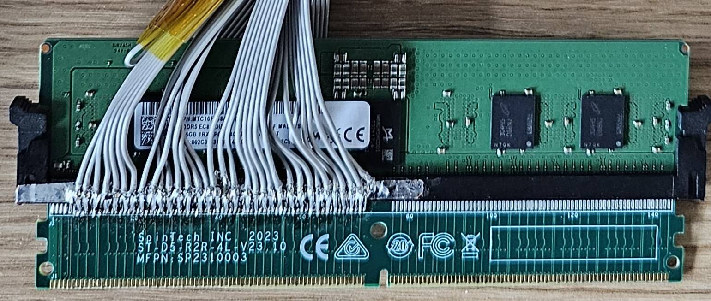
Complete Target Setup
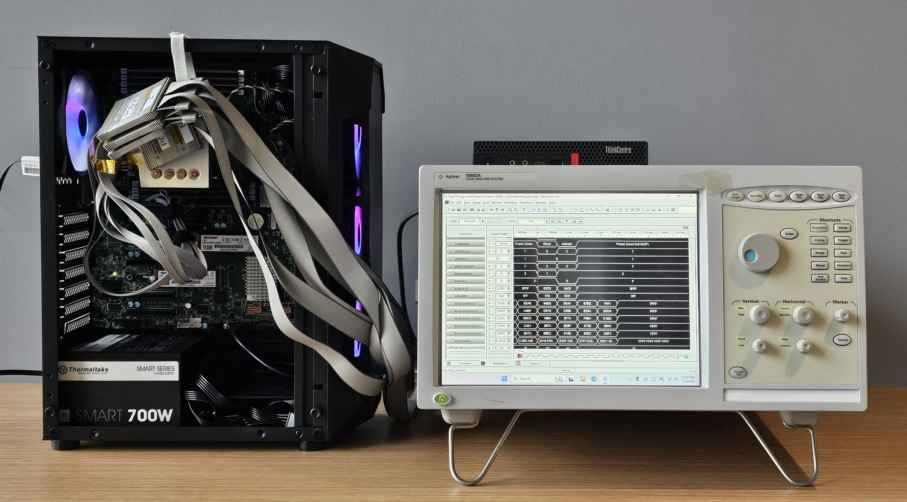
Covertly Capturing DRAM Traffic from a Datacenter (or Are You Crazy?! Who Will Let You Into a Datacenter With This Thing!)
You are right, hopefully no one sane allows bulky lab instruments into their datacenters unsupervised. However, we have also built a portable version, which fits neatly into a 17" briefcase, ready to be taken to new exciting places with only the freshest keys. When closed, it looks like a regular briefcase and even fits under the seat in front of you in an airplane, so good luck explaining this to TSA agents at the airport near you. Finally, the briefcase does not need to be open for the attack to work and it even has a cup holder for your coffee.
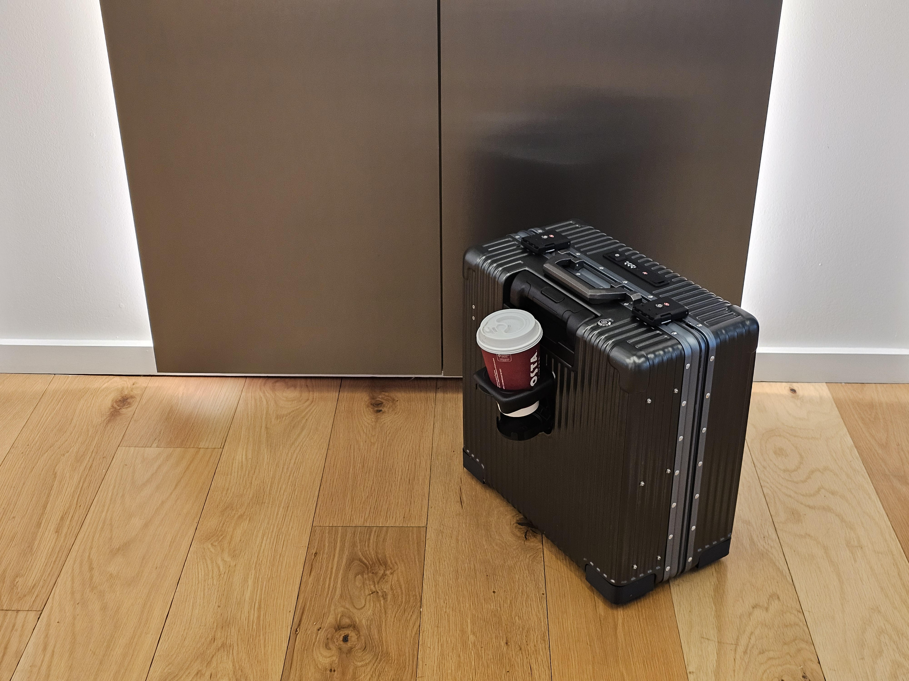
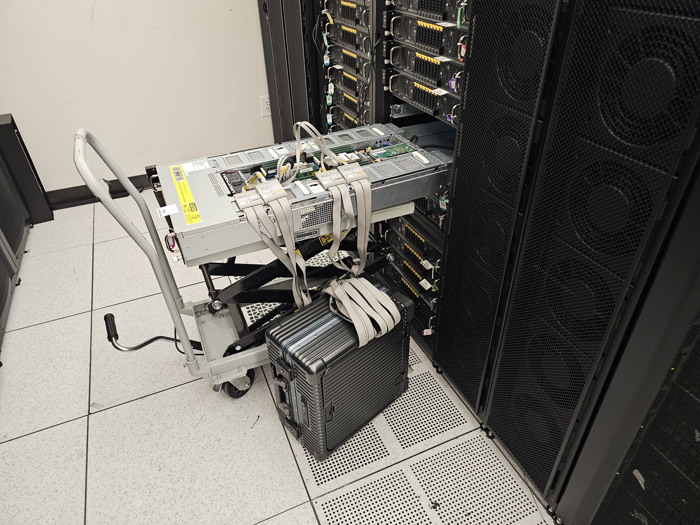
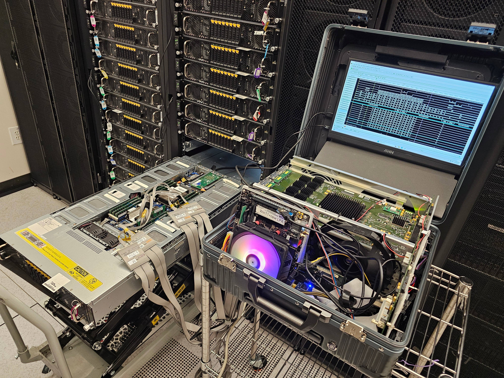
Deterministic Encryption in TEEs
While TEEs do encrypt their data, we show that the encryption mode used by Intel and AMD is not sufficient to prevent physical memory interposition attacks. The photo below shows a DDR5-based TDX machine performing three write operations. The first writes zeros to memory, the second writes ones, and the third writes zeros again. While the data itself is encrypted, notice how the values written by the first and third operation are the same. This is called deterministic encryption and forms the basis of our attack, as we can compare blocks of encrypted data and learn if the underlying data is equal or not.
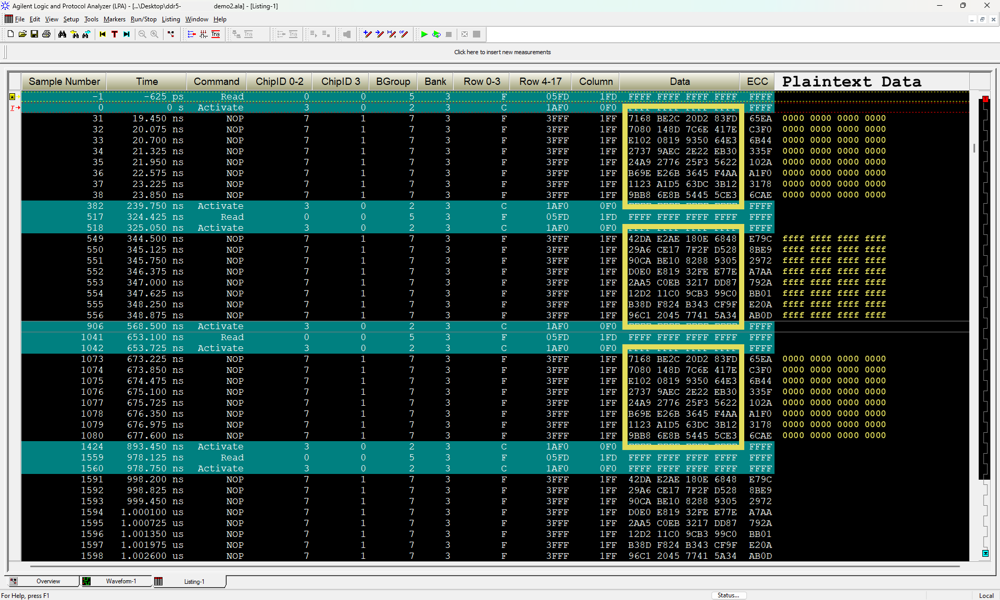
Recovering Attestation Keys from Intel Machines
Here, we show how to use our portable briefcase logic analyzer to extract ECDSA attestation keys from Intel's Provisioning Certification Enclave (PCE), allowing us to break SGX and TDX attestation. We recover the key in a fully automated manner from a single signing operation.
Forged TDX Quote
We provide a forged TDX quote utilizing our extracted key. This TDX quote can be successfully verified using Intel's DCAP Quote Verification Library at the highest trust level of UpToDate. This quote contains invalid measurements of 0x1337..., which are not possible in an authentic TDX report. The quote, associated collateral (information required to verify the quote), and scripts to verify the quote on a Linux system are provided for download below.
Download
View Quote Info
# Usage:
# Build the Intel Quote Verification Library
./build_qvl.sh
# Attest the quote - succeeds
./attest.sh
Forged Quote as a Service
Want your own quote? No problem. Check out our Attestation as a Service bot and obtain a freshly-minted customized attestation quote at your favorite social media service, signed on genuine not-capable-of-TDX hardware using up to date Intel keys! What would you like to attest today?
X (Twitter) / BlueSky
The People Behind TEE.fail
Frequently Asked Questions
Hide/Show AllDRAM refers to the physical memory inserted into a computer's motherboard. Memory often comes in DIMM modules, which for DDR5 look like this:
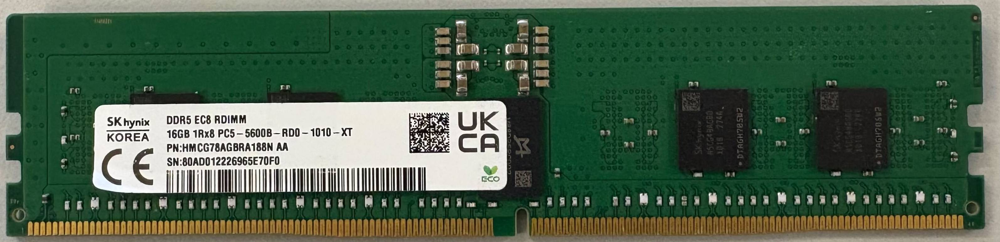
The DRAM Bus is the actual wiring and protocol that allows the processor to communicate with the DIMMs.Bus interposition refers to hardware that is located between two ends of a bus and allows us to see the communication taking place on the bus itself. In the case of the DRAM Bus, this is memory traffic such as reads and writes performed by your computer. To observe the traffic, we attach the interposer to a logic analyzer, which is a device that lets us analyze and record the data passing through.
Sure. The photo to the left is the interposer itself, where the logic analyzer connects to the square gray pods. The photo on the right focuses on the soldering itself, showing the components for the probe isolation network used on each pin.
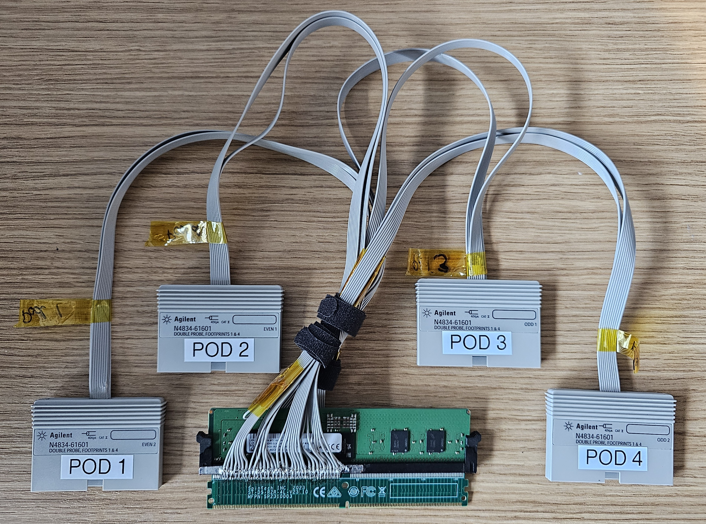
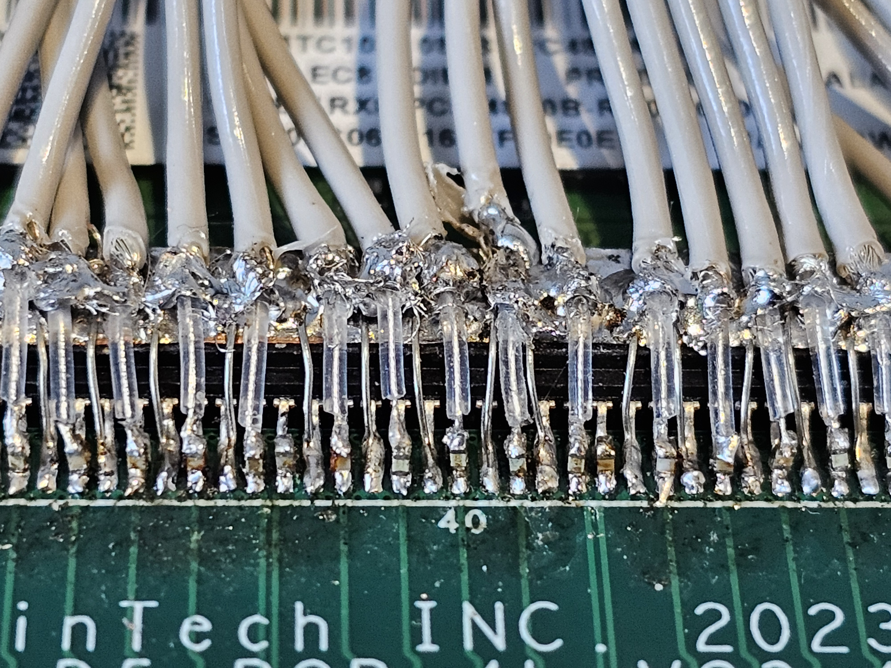
Unlike the older DDR4 standard, DDR5 memory has two independent channels on a single DIMM. Bascially DDR5 has two independent DIMMs in one memory module. As we only need one channel to mount our attack, we opted to go with Channel A (left in the picture above) leaving the other side unmodified. Ironically, it means that DDR5 interposers are easier to build than their DDR4 counterparts, as only 50% of the soldering work is required. Likewise, they also need 50% less input channels to capture their traffic which means less logic analyzer hardware is required.
Check out our paper for full details on how to build your own DDR5 DRAM interposer, including board schematics. The components are readily available and it should cost you under $1000 to build a setup similar to ours.
It allows us to see and record the memory traffic flowing between the computer and DRAM, but not modify it (unfortunately). Crucially, we can observe the contents of memory as it is read and written, even if the data itself is encrypted.
It was simpler for us to solder components to existing risers rather than design a PCB from scratch. That said, if you would like to help us out and design one, do email us at teefail@googlegroups.com.
Both WireTap and BatteringRAM targeted systems built on older DDR4 memory, whereas we target DDR5. The difference is critical, as TEE.fail can be used to attack the latest TEE offerings by Intel and AMD, namely Intel TDX and AMD SEV-SNP with Ciphertext Hiding, which offer confidential virtual machines (CVMs). As CVMs are used for the trust anchor in Nvidia's GPU confidential computing, we show how our attack also breaks GPU attestation. We then show how real-world CVM deployments are affected by these interposer attacks.
Trusted Execution Environments
A trusted execution environment (TEE) is a hardware feature that aims to provide confidentiality and integrity of code and data, even if attackers completely compromised the system's software and obtained root level access. The idea is that users can trust that their data remains secured even if processed and stored on remote servers they do not actually control, as data protection is enforced by the hardware itself (rather than the operator). Common examples of TEEs include Intel's SGX and TDX, AMD's SEV and Nvidia's Confidential Compute.
When cloud operators rent out servers, customers are paying for a digital version of a physical computer, which allows them to run their own software on it to provide you (the end user) some service. This digital version is what is commonly referred as a Virtual Machine, or VM in short. However, while saving on costs, this model also places a large amount of trust in cloud operators, as they can easily inspect, read, or even modify all the customers' VMs that they run.
A Confidential Virtual Machine (CVM) aims to reduce this trust, as it provides additional hardware-backed confidentiality and integrity guarantees, preventing even the cloud operator from accessing the code and data inside the CVM via software. Intel's TDX and AMD's SEV-SNP are examples of TEEs providing CVM technology. Services often argue that users' data is secure and private since they use CVMs, meaning that your data will never be exposed to others or even to the service provider themselves.
Attestation is the process by which a service provider proves to the user that data is about to be placed into a confidential VM and thus protected inside the TEE by the hardware's confidentiality and integrity guarantees. When attestation is properly done, users know that their data will not be exposed to others and can even be assured that the output they get is genuine and correct.
Attestation is implemented using cryptographic digital signatures with keys placed inside each individual CPU and signed by the hardware vendors such as Intel or AMD. This way, a user can verify a chain of trust from the execution of the enclave on a specific CPU to Intel or AMD and thus be assured that their data is protected by the CPU's TEE and not exposed to the outside.
We are able to successfully extract data from CVMs, including secret attestation keys. As attestation is the mechanism used to prove that data and code are actually executed in a CVM, this means that we can pretend that your data and code is running inside a CVM when in reality it is not. We can read your data and even provide you with incorrect output, while still faking a successfully completed attestation process. The implications of this breach are highly dependent on the service you are using, ranging from decrypting confidential transactions to exposing your AI chats. Keep reading below for specific examples of our attacks.
TEEs including Intel SGX, TDX, and AMD SEV-SNP use memory encryption to protect their memory. However, this encryption is flawed and is deterministic, meaning that the same inputs can be matched to the same outputs. Although this may seem normal, this means that when we see a ciphertext (an encrypted value) multiple times, we know the corresponding plaintext in memory was the same every time.
The images below illustrate the problem here. The left is a plain picture of Tux, the Linux penguin, while the middle is a picture of Tux properly encrypted, which is basically just random noise unless you have the decryption key. The right is Tux encrypted with deterministic encryption. As you can see, while the colors are distorted, you can easily see the penguin. This is the crux of our attack.
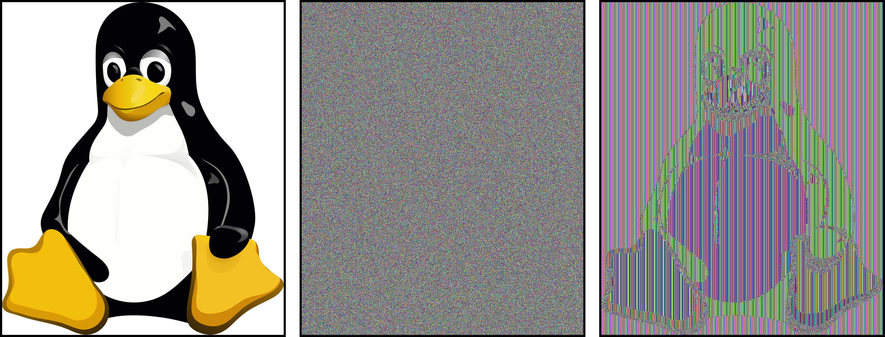
These attacks are very practical and you don't need a lab. Check out the paper for how to build an interposer yourself. The components are easily available on the Internet. Once built, we are able to successfully extract secret keys from TEEs and violate their protections. We can even breach SGX and TDX attestation and pretend to be running a confidential virtual machine, even when we are not.
You can even generate your own forged attestation quote with our bot! Check it out on Twitter and BlueSky
It is difficult to detect this attack from software as everything executes normally, just outside of TEE protections. For Intel TEEs, properly forged SGX and TDX attestation quotes are cryptographically indistinguishable from legitimate ones.
If you own the hardware, you might want to use your security cameras to see people with interposers inside your data center. If you operate a service, make sure you understand which servers you trust and where they are located. Trusting just any attestation report without understanding that machine's location might not be a good idea for the time being.
We also recommend taking into account TEE compromises when designing your service's security practices. Finally, it might be possible to mitigate the risks stemming from deterministic encryption via software countermeasures. However, these might be difficult and expensive. Contact us at teefail@googlegroups.com if you'd like to help out or discuss more.
As far as we know, this has not been exploited in the wild.
Intel SGX and TDX
SGX (Software Guard eXtensions) and TDX (Trust Domain eXtensions) are a set of features present on recent servers made by Intel which make up Intel's Trusted Execution Environments (TEEs). SGX is an older Intel technology (available since 2016) and places code and data into secure spaces known as enclaves, which are protected from attackers with root-level access. TDX is newer and much more ambitious, placing entire virtual machines inside TEE protections with little modifications. Thus, while SGX required developers to change their code to support TEEs, TDX removes this requirement, thus allowing existing systems to easily enjoy TEE security guarantees.
Both TDX and SGX use deterministic encryption to protect memory, making them vulnerable to bus interposition attacks. Making things worse, TDX's security actually relies on SGX for attestation. This means that SGX breaches can and often will affect TDX, tying together the security guarantees across all of Intel's TEE implementations.
Attestation is the process by which an Intel TDX CVM can prove that it actually executed on TDX hardware in a trusted manner. In Intel TDX, attestation contains measurements (cryptographic hashes) of the boot and runtime state of the CVM, the signer of the CVM image, and its configuration. It additionally attests that the TDX hardware contains the latest, up to date TDX firmware. The attestation report is signed by a cryptographic signature chain that starts at a per-CPU attestation key and ends at Intel's public root of trust.
We extracted the provisioning certification key, which is a per-CPU signing key used in the signature chain to sign the actual keys used in both SGX and TDX attestation. The provisioning certification key is signed by Intel's platform registration service as an X.509 certificate. With this key, we can forge attestations from both TDX and SGX. This means we can pretend to run code in a trusted manner inside TDX or SGX, while not actually utilizing confidential VMs or enclaves at all. This means VMs and enclaves will run exposed outside of any TEE protections. In fact, we can also run TDX VMs or SGX enclaves on non-Intel hardware, such as AMD or Apple CPUs.
As interposer attacks are considered out of the threat model for Intel SGX and TDX, there is no current mitigation besides separately ensuring physical security of the TDX-enabled server.
Yes, Intel has published a security announcement here.
The interposer attack presented in this paper affects all Intel CPUs using DDR5 memory. At the time of writing, this means Scalable Xeon CPUs from the 4th generation onwards, i.e., all CPUs currently supporting TDX.
AMD SEV-SNP
Similar to Intel TDX, AMD's Secure Encrypted Virtualization (SEV) is a set of TEE hardware features allowing for confidential virtual machines. SEV with Secure Nested Paging (SEV-SNP) is the most recent extension to SEV, providing important isolation between hypervisors and guest virtual machines.
Ciphertext Hiding is a security feature for SEV-SNP recently introduced in AMD EPYC servers based on the Zen 5 architecture. It prevents host hypervisors from reading the ciphertexts of encrypted CVM memory. This is necessary to truly mitigate prior software-based attacks on SEV (such as Cipherleaks). We note that Intel TDX and SGX always had such isolation mechanisms as a baseline feature.
Ciphertext Hiding only prevents the software view of encrypted memory. It does not fix issues with deterministic encryption nor does it prevent physical bus interposition. Thus, it does not affect our attack.
We demonstrate our attack by extracting private signing keys from OpenSSL's ECDSA implementation from an SEV-SNP VM. Importantly, OpenSSL's cryptographic code is fully constant-time and our machine had Ciphertext Hiding enabled, thus showing these features are not sufficient to mitigate bus interposition attacks.
Like Intel, AMD considers interposer attacks to be out of scope for SEV-SNP. Thus, AMD does not plan to publish any updates to their SEV-SNP firmware. To mitigate our attacks, users need to separately ensure the physical security of their servers.
Yes, AMD has published a security bulletin here.
AMD products with SEV-SNP and DDR5 memory are affected. At the time of writing this includes EPYC server CPUs based on the Zen 4 and 5 architectures.
Nvidia Confidential Computing (CC)
Nvidia's Confidential Computing (CC) is a set of TEE features on recent high-end Nvidia server GPUs (e.g., H100/200, B100/200, etc.) aiming to protect GPU workloads like AI. Like other TEEs, Nvidia CC also includes a set of attestation features which can be used with SEV and TDX to extend the trust domain of CVMs to encompass GPUs. This allows users to not only verify that they are running on genuine Intel or AMD servers but also that the server has a genuine Nvidia GPU installed. Overall, the combination of CPU and GPU attestation means that GPU workloads like AI chats always remain protected, with their confidentaility and integrity being backed by the TEE hardware.
Although Nvidia CC provides remotely verifiable attestation quotes, they are not bound to the identity of a specific CVM or even the CPU running it. Instead, Nvidia CC provides the means for a CVM to ensure that it has access to a genuine fully updated Nvidia GPU, as well as allows the CVM to establish an encrypted channel to the GPU which cannot be read by the hypervisor.
Basically, the fact that Nvidia's attestation reports are not bound to the identity of a specific CVM means we can "borrow" Nvidia attestations from devices that aren't ours. This means that we can convince users that their applications (think private chats with LLMs or Large Language Models) are being protected inside the GPU's TEE while in fact it is running in the clear. As the attestation report is "borrowed", we don't even own a GPU to begin with.
As TEE.fail does not directly attack any Nvidia CC elements, there are no mitigations from the Nvidia CC side. Instead, we recommend users ensure they truly trust the servers running their applications, ensuring that the servers are located in environments with adequate physical security measures.
BuilderNet
BuilderNet is a network of Ethereum block builders that uses TDX to provide fairness, confidentiality, and provable redistribution of maximum extractable value (MEV) while creating blocks, where MEV is the most value a block constructor can extract from a given block by including/excluding/reordering transactions. BuilderNet builds blocks worth millions of dollars of MEV each month and is in general one of the largest block builders.
We demonstrated that if a malicious operator with an attestation key could join BuilderNet, they will obtain configuration secrets including the ability to decrypt confidential orderflow and access the Ethereum wallet for paying validators. Additionally, a malicious operator could build arbitrary blocks or frontrun (i.e., construct a new transaction with higher fees to ensure theirs is executed first) the confidential transactions for profit while still providing deniability.
While BuilderNet currently only supports instances hosted on the Microsoft Azure cloud for TDX, which has its own implementation of a trusted platform module (TPM) with additional measurements, we discovered we are able to forge the Azure TPM data because the Azure TPM attestation as implemented in BuilderNet fully relies on TDX attestation. Thus, we are able to pretend to be an Azure instance.
Although BuilderNet aims to eventually be permissionless, BuilderNet is currently permissioned and considering approaches to mitigate malicious operator risk. As far as we are aware, none of the current operators are compromised. If you use BuilderNet, ensure you are submitting orderflow to the latest official public endpoints and verify that its attestations are signed by official Azure TPM certificates.
dstack
dstack is an SDK for building confidential applications on top of CVMs and Nvidia CC. With it, users can easily create a CVM, deploy it to a server, and check the TEE attestation reports.
We demonstrate that a malicious server provider can execute a user's workload in a non-confidential VM but forge all attestation information such that the user nonetheless believes that their workload has been run in a real TDX CVM. Furthermore, we show how we can "borrow" Nvidia CC attestations from devices that aren't ours, faking ownership of GPU hardware and convincing others that we have GPUs that we have never owned.
Since Nvidia CC's attestation relies entirely on the CVM for trust, a user cannot tell if an Nvidia GPU attestation report was truly generated on the same hardware the virtual machine claims it is. Thus, if the user requests a GPU attestation, we show how an attacker can cheaply relay an attestation report from a spot GPU on another remote provider to that user.
As dstack is just an SDK, when building on top of it, make sure to take into consideration possible attestation breaches. In general, when designing or using applications built with dstack, you need to be conscious of the trust needed in physical operators of TDX hardware.
Secret Network
Secret Network is a blockchain that provides confidentiality and integrity of smart contract execution by way of Intel's SGX. This is accomplished by encrypting all on-chain data, and provisioning only a TEE with the necessary key material to decrypt transactions.
We demonstrate the direct extraction of the primary network-side secret, the consensus seed, from the SGX TEE by exploiting deterministic encryption. This secret allows us to decrypt all confidential transactions on the network. This attack shows that even in a world where attestation attacks are somehow mitigated and attestation keys themselves are safe, Intel TEE applications and their secrets are still at risk from our attack.
In WireTap, Secret is only attacked by way of attestation, while TEE.fail directly exploits cryptographic code executing in the Secret-provided SGX enclave to extract secrets.
Miscellaneous
{kind=link}
{kind=link}
{kind=link}
{kind=link}
SLAP and FLOP in the News
- New physical attacks are quickly diluting secure enclave defenses from Nvidia, AMD, and Intel
-
 TEE.Fail attack breaks confidential computing on Intel, AMD, NVIDIA CPUs
TEE.Fail attack breaks confidential computing on Intel, AMD, NVIDIA CPUs
- New Attack Targets DDR5 Memory to Steal Keys From Intel and AMD TEEs
- Intel, AMD processor-stored secrets threatened by novel TEE.Fail intrusion
- New TEE.Fail Side-Channel Attack Extracts Secrets from Intel and AMD DDR5 Secure Enclaves
- New TEE.fail Exploit Steals Secrets from Intel & AMD DDR5 Trusted Environments
-
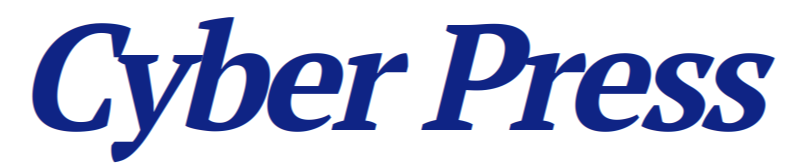
Researchers Reveal New TEE Fail Attack That Compromises Intel and AMD DDR5 Security - New TEE.fail Attack Breaks Trusted Environments to Exfiltrate Secrets from Intel and AMD DDR5 Environments
Acknowledgments
This research was supported by the Air Force Office of Scientific
Research (AFOSR) under award number FA9550-24-1-0079;
the Alfred P. Sloan Research Fellowship;
and gifts from Qualcomm and Zama.
The views and conclusions contained in this document are those of the authors and should not
be interpreted as representing the official policies, either expressed or implied, of the
U.S. Government.